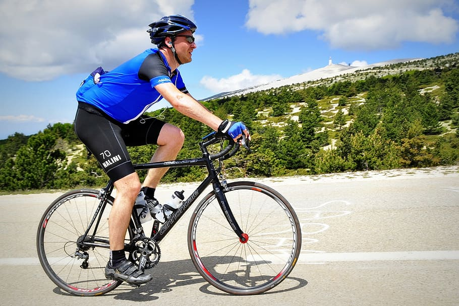

Bersepeda dari Jakarta hingga Bali Membawa Pesan Dampak Nyata Krisis Iklim
:strip_icc():format(jpeg)/kly-media-production/medias/4194222/original/091489500_1665991922-GP1T1AST_PressMedia.jpg)
Menggaungkan pesan lebih luas terkait krisis iklim dapat dilakukan dengan berbagai cara, termasuk dengan bersepeda. Ini pula yang tergambar dalam aksi 'Chasing the Shadow' yang akan bersepeda dari Jakarta-Bandung-Semarang-Surabaya-Bali.
Berdasarkan keterangan tertulis yang diterima Liputan6.com, Chasing the Shadow atau perjalanan kesaksian mengenai cerita krisis iklim di berbagai wilayah kick-off pada Minggu, 16 Oktober 2022. Tiga pesepeda lalu dilanjutkan enam pesepeda lain yang estafet di perjalanan selanjutnya, memulai perjalanan mereka di leg pertama, yakni Jakarta-Bandung.
Di Jakarta sebagai kota pertama perjalanan ini, tim menyambangi dua lokasi, yakni Muara Baru dan Marunda. Di Muara Baru, tim akan berbagi kisah warga di sana bertahan dari gempuran banjir rob setiap tahunnya.
Menurut data dari Dinas Sumber Daya Air Provinsi DKI Jakarta pembangunan tanggul setinggi 4,8 meter dilakukan sebagai antisipasi menahan kenaikan muka air laut yang berpotensi menenggelamkan Jakarta. Sedangkan di Marunda, tim berbagi pengalaman, bagaimana debu dan polusi batubara menjadi makanan sehari-hari bagi warga Marunda.
Ini merupakan akibat adanya aktivitas bongkar muat batubara di lokasi tersebut. Berdasarkan penelitian Greenpeace Asia Timur kenaikan permukaan laut yang ekstrem dan banjir pesisir di tujuh kota besar di Asia pada 2030 berpotensi menurunkan produk domestik bruto (PDB) senilai 724 miliar dolar AS. Laporan itu memperkirakan pada 2030 sebanyak 15 juta orang di tujuh kota tersebut akan tinggal di daerah yang berisiko banjir.
Potensi Ancaman Ganda
Analisis ini termasuk salah satu yang pertama dari analisis sejenis yang menggunakan data resolusi spasial tinggi untuk memprediksi area di setiap kota yang berisiko terkena banjir, sebagai dampak langsung krisis iklim.
Jakarta masuk ke dalam kota yang berpotensi mengalami ancaman ganda. Ancaman itu berasal dari kenaikan permukaan laut dan tenggelam.
Hampir 17 persen dari total luas daratan Jakarta berada di bawah elevasi air laut jika banjir 10 tahunan terjadi pada 2030. Ini membawa potensi kerugian terhadap produk domestik regional bruto (PDRB) sebesar 68 miliar dolar AS atau setara Rp1.045 triliun. Angka ini sekitar sepertiga PDRB Jakarta di 2021. Sekitar 1,8 juta warga Jakarta berisiko terdampak banjir tersebut.
Daerah yang berpotensi terkena banjir antara lain bangunan perumahan dan komersial, Monumen Nasional dan Balai Kota Jakarta, serta pusat perbelanjaan di sepanjang pantai. Selain terancam tenggelam, udara Jakarta sudah kian tidak sehat. Hal tersebut dikarenakan Jakarta dikepung polusi yang berasal dari dua sektor utama, yakni transportasi dan PLTU-PLTU batubara yang beroperasi di sekitar kota Jakarta.
Laporan Greenpeace
Dalam laporan Greenpeace yang bertajuk "Pembunuh Senyap Di Jakarta", PLTU Batubara di sekitar Jakarta dapat menyebabkan 10.600 kematian dini dan 2.800 kelahiran dengan berat lahir yang rendah per tahunnya, hampir setengah dari dampak ini berada di Jabodetabek.
Bahkan Data Dinas Lingkungan Hidup DKI Jakarta mencatat ada 139 Hari dengan level ISPU (Indeks Standar Pencemaran Udara) Tidak Sehat sepanjang 2021 lalu. Sedangkan dari Januari hingga Agustus 2022 tercatat ada 115 hari dengan level ISPU Tidak Sehat.
Dilansir dari data World Air Quality Report, Jakarta pernah menempati peringkat ke-5 sebagai kota dengan kualitas udara terburuk di dunia pada 2019. Dalam laporan IPCC ditegaskan bahwa setidaknya dunia harus menutup 80 persen PLTU batubara pada 2030, dan meninggalkan batubara secara total di 2040, jika tidak ingin terjebak dalam krisis iklim.
Negara-negara di seluruh dunia harus segera meninggalkan energi fosil dan melakukan transisi energi untuk menekan laju perubahan iklim. Sayangnya, di saat tren global melakukan transisi energi secara masif, Indonesia masih tak bisa lepas dari ketergantungan batubara.
Transisi Energi
Transisi energi yang dilakukan juga masih setengah hati dengan tetap membangun 13,8 GW PLTU batubara baru. Dominasi batubara menunjukkan bahwa relasi kekuasaan dan pebisnis telah berkelindan, dan menghasilkan kebijakan-kebijakan politik yang hanya menguntungkan sekelompok elite.
Krisis iklim bukanlah isapan jempol belaka saat ini. Warga utara Jakarta telah menjadi saksi sunyi bahwa ancaman ini sudah mengetuk pintu rumah mereka.
"Pilihan-pilihan kita akan gaya hidup, energi dan juga sistem ekonomi telah berdampak pada lingkungan, sosial serta cara hidup kita saat ini. Namun, solusi nyata juga nampak di depan mata," kata Didit Wicaksono selaku Juru Kampanye Iklim dan Energi Greenpeace Indonesia.
Indonesia memiliki potensi energi bersih dan terbarukan seperti surya, angin dan air yang melimpah dan biayanya semakin murah. "Tak ada alasan bagi pemerintah Indonesia untuk tidak mempercepat transisi energi yang berkeadilan sebagai solusi untuk keluar dari krisis iklim," demikian tutup Didit.
Refrensi: https://www.liputan6.com/lifestyle/read/5099434/bersepeda-dari-jakarta-hingga-bali-membawa-pesan-dampak-nyata-krisis-iklim?page=4
KembaliSarah Abdini: Menginspirasi Melalui Bersepeda

Bersepeda acap kali dianggap sebagai hobi yang maskulin sehingga tidak banyak wanita yang menggeluti dunia sepeda...
Baca SelengkapnyaBersepeda Itu Revolusioner

Bagaimanapun, di dunia yang didominasi kendaraan bermotor, bersepeda adalah tindakan revolusioner....
Baca SelengkapnyaBersepeda Juga Bikin Sehat Mental Lho...
Bersepeda, bermanfaat bagi kesehatan, rasanya bukan lah rahasia lagi...
Baca Selengkapnya